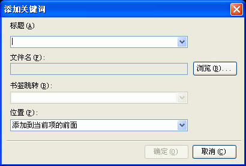

当新建或打开一个工程后，您可以通过用鼠标点击任意的索引项，然后在索引编辑区的右键弹出菜单里选取"添加关键词..."或者您也可以通过选取程序索引编辑区的"添加关键词"按钮将看到这个对话框。关于这个对话框的使用请看下面的具体描述.

书签跳转:
如果当前链接文件里存在书签的定义，那您在这里也可以选择链接到这个文件的某个书签的位置
- 需要以#开始。
位置:
添加到哪个位置下- 请在列表框里选择您要添加到CHM索引项的哪个位置。
| 版权所有 © 2000-2007 国华软件 保留全部权利. |